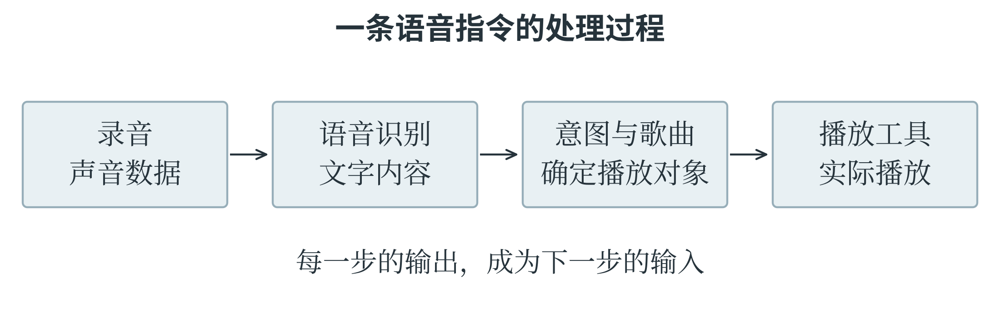
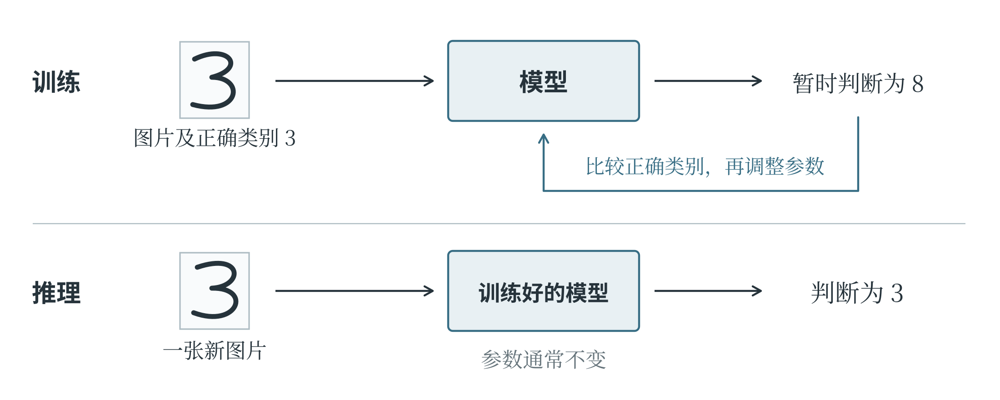

1.1 人工智能是什么
人工智能（Artificial Intelligence，简称 AI）研究怎样让机器完成感知、学习、推理和决策等任务。辨认事物、寻找规律、推导结论、选择行动，都属于这类研究关心的问题。从相册里找出同一个人，要辨认不同照片中的人脸；根据以往记录预测明天的用水量，要寻找数据之间的规律；下棋时选择下一步，则要考虑不同走法会带来什么结果。人做这些事各有办法，计算机却需要能够执行的处理方法。一项应用也常常要调动几种能力：语音助手先听清说话内容，再处理请求，最后组织回答。至于这套能力装在什么地方，并没有固定要求。它可以帮助有机身和传感器的机器人绕过障碍，也可以藏在手机的一个相册功能里。了解人工智能，首先要看它怎样处理信息、完成任务。
规则难写全时怎么办
计算机很善于照明确的步骤办事。算出一列数的总和、按文件名排序、到点播放铃声，只要把要求规定清楚，程序就能执行。
手写数字识别却难得多。同一个“3”，有人写得圆，有人写得扁；拍成图片后，还可能歪斜、模糊，带上阴影。若每遇到一种写法就补一条规定，规则很快就会变得繁杂，而且总有没考虑到的情况。另一种办法，是准备许多手写数字图片，标明各自对应的数字，让程序从这些例子中寻找区分它们的规律。这样，工作的重心就变了：不再由人逐条写完所有识别规则，而要认真考虑提供哪些材料、用什么方法学习、怎样检查学习效果。机器学习便是人工智能的重要研究方向，它利用数据或经验改善模型完成任务的表现。
不过，人工智能的办法不止机器学习。专家系统会把领域知识整理为规则，再根据事实推导结论，并不一定先从大量样本中学习。
同一个产品里，普通自动化与人工智能功能也可能并存。相册保存照片和辨认人脸就属于不同的工作。“智能相册”这个名称，不能代替对具体功能的分析。
先把系统的任务说清楚
同一张照片可以交给不同的系统处理。一个系统回答“有几片叶子”，另一个系统回答“属于哪种植物”，还有一个系统检查“这张照片是否清晰”。输入材料相同，输出要求却不同。设计人工智能应用时，需要先说清楚所要完成的任务，也就是系统接收什么材料、需要给出什么结果，以及怎样判断结果是否合适。否则，即使程序顺利运行，也可能回答了一个原本没有打算问的问题。
以语音点播音乐为例，系统接收到的是一段录音，最终需要执行播放动作。录音先经过语音识别，得到文字；接着从文字里分辨歌曲名称和播放要求；找到相应歌曲后，再交给播放器。说话者含糊地说“放刚才那首”，系统还需要利用前面的对话或播放记录。图 1-1 把这些环节连在一起。某一步的错误可能传到后面：歌曲名称听错了，检索即使完全按照文字执行，也会找到另一首歌。因此，检查一个应用时，要沿着过程定位问题。

描述一种能力时，任务和条件要一起说清楚。安静房间里识别很准，不代表在嘈杂场所也一样；能够照要求办事，也不代表能够判断要求是否合理。
训练、推理与泛化
手写数字识别中的模型，可以理解为一套把图片变成类别判断的计算方法。计算中能够调整的数值称为参数；参数变了，同一张图片得到的结果也可能改变。一个尚未学好的模型，可能把“3”认成“8”。训练程序把这个结果与正确类别比较，再按一定的方法调整参数，尽量减少差错；随后换上其他图片，继续比较和调整。这个利用数据调整模型的过程称为训练。在这里，一张图片与它的正确类别构成一个训练样本：图片是学习的材料，类别提供检查结果的依据。训练完成以后，把新图片交给模型，使用已经得到的参数作出判断，这一步通常称为推理，图 1-2 展示了两者的区别。一次普通识别通常不会自动修改参数，所以模型今天认错了，明天再见到同一张图，也可能仍然认错。
“推理”在机器学习中有这个专门含义。在逻辑讨论中，它也常指从已有知识推导结论，读到这个词时要结合上下文分辨。

模型是否学会了，不能只看它对旧图片的判断。假如一个系统保存了所有训练图片及其答案，见到原图就去查找，可能一张也不认错；换成另一个人写的数字，它却可能不会了。这与做题时只记住例题答案、换一组数便无从下手，有相似之处。模型需要从已有样本中学到能用于新情况的规律，这种能力称为泛化能力。因此，检查模型时还要准备没有用于训练的新样本，看看换了材料以后，它是否仍能完成任务。
几种典型应用
数字图像由许多像素组成，每个像素对应画面中的一个小位置。把图放大，就能看到一格格颜色，它们连在一起才成为完整画面。常见彩色图像用红、绿、蓝三个通道的数值记录颜色。因此，计算机接收到的首先是按位置排列的数值，要从中认出猫的耳朵、眼睛和尾巴，还需要模型进行计算。识别系统通常会先采集图片、调整尺寸等输入条件，再交给模型处理。
输出“猫”，回答的是“是什么”；标出猫的位置，回答的是“在哪里”。两种结果结合起来，系统就能指出画面中有什么、各在哪里。
语音识别从声音开始。麦克风把声波的变化转成电信号，设备再把信号数字化，得到按时间排列的数据。模型分析这些数据，寻找它们与词语之间的联系。一段“明天下午三点开会”的录音，就可以这样变成文字记录。不过，同一句话换个人说，口音、语速都可能不同；旁边再有车辆声或音乐声，识别就更难了。把语音转换为文字称为语音识别，把文字转换为声音称为语音合成。如果任务是根据声音判断说话者的身份，则属于说话人识别。它们都与声音有关，所要回答的问题却不一样。
推荐系统要解决的是“先展示什么”的问题。图书很多，屏幕一次能展示的却很少，系统需要估计哪些书更适合当前读者，再排出先后顺序。图书的主题、读者以往的阅读记录，以及其他读者读过哪些相关书籍，都可能成为判断依据。但记录不能完全代表兴趣：点击可能出于好奇，也可能是误触；没读过某本书，可能只是从未见过它。推荐结果因此是一种估计。系统追求的目标也会影响排序：如果希望获得更多点击，可能把更吸引眼球的书放在前面；如果希望帮助读者接触新知识，则可能多展示一些不同领域的书。
人工智能还可以预测数值、规划行动和生成内容。例如，预测用水量，安排机器人前往目的地的路线，或者按要求生成文字和图像。这些本领各有适用范围：擅长下棋的系统不会因此就懂得照顾动物，白天认图很准的模型到了夜间也可能出错。人的智能与身体活动、社会交往和长期经验紧密相连，机器则依靠能够得到的输入和计算方法处理任务。即使在某件事上表现相似，也不能据此认为两者在其他方面同样相似。